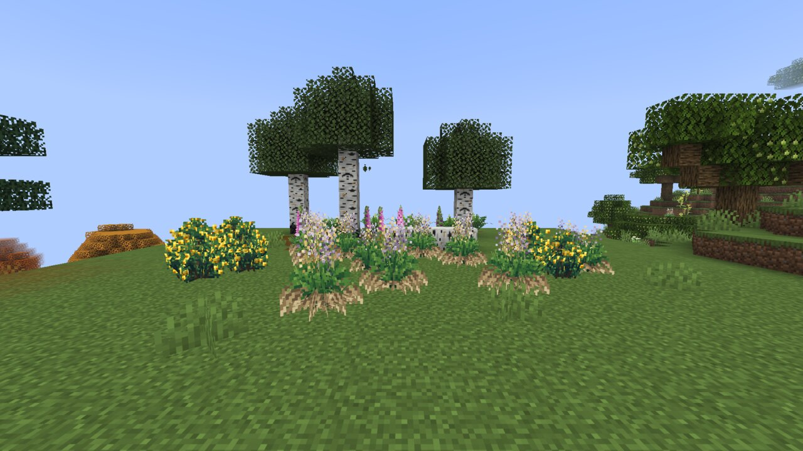
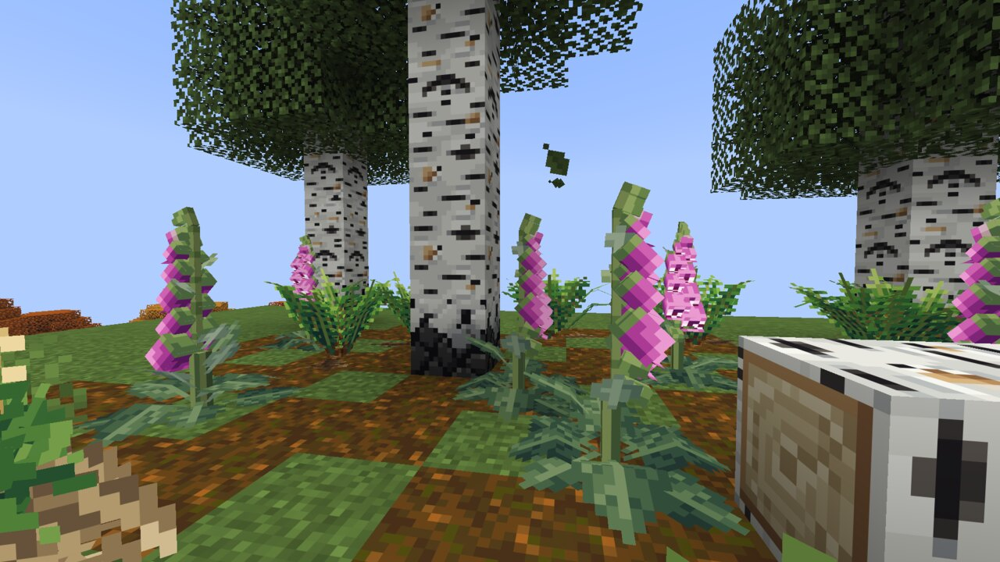
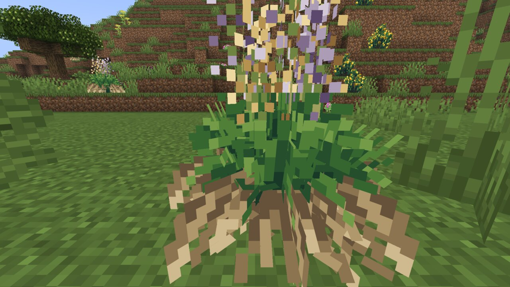
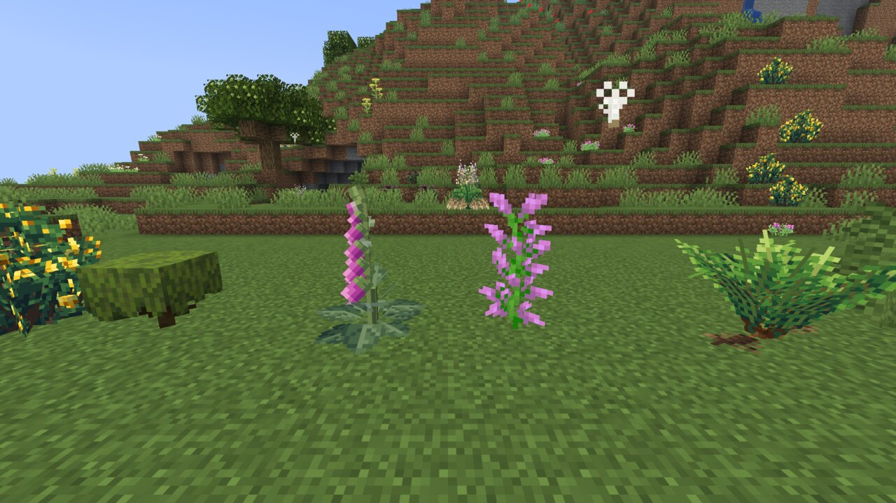
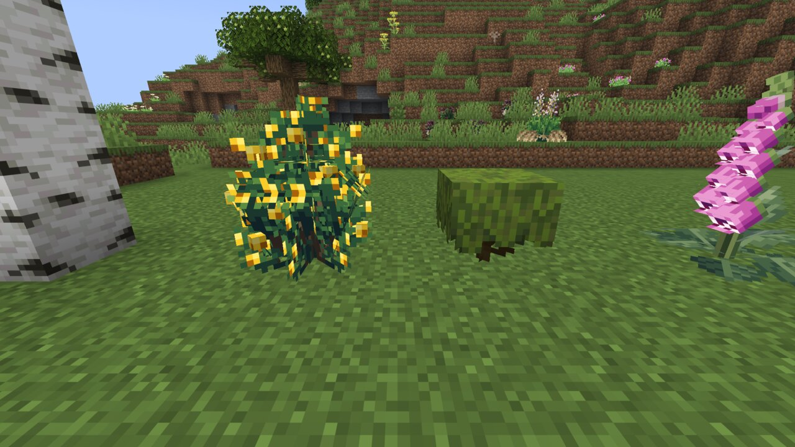
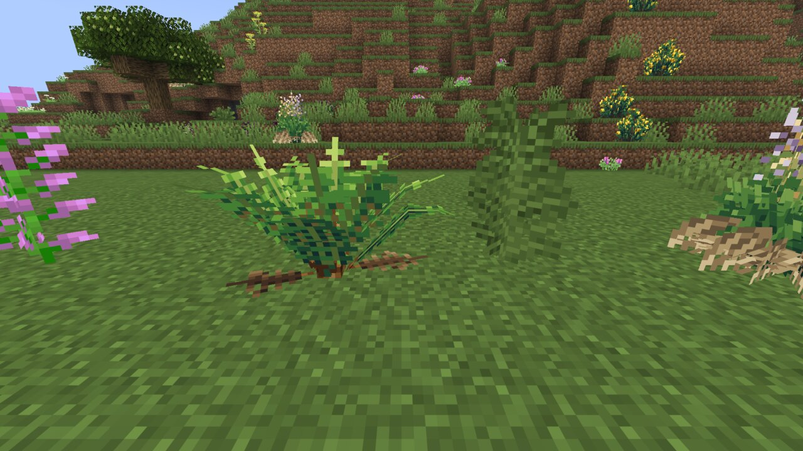
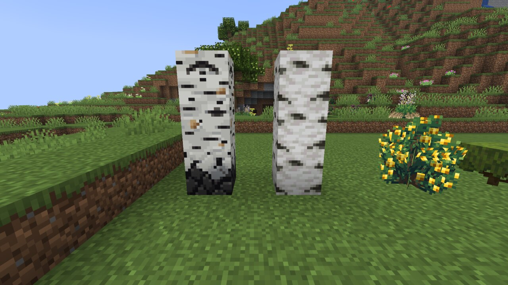
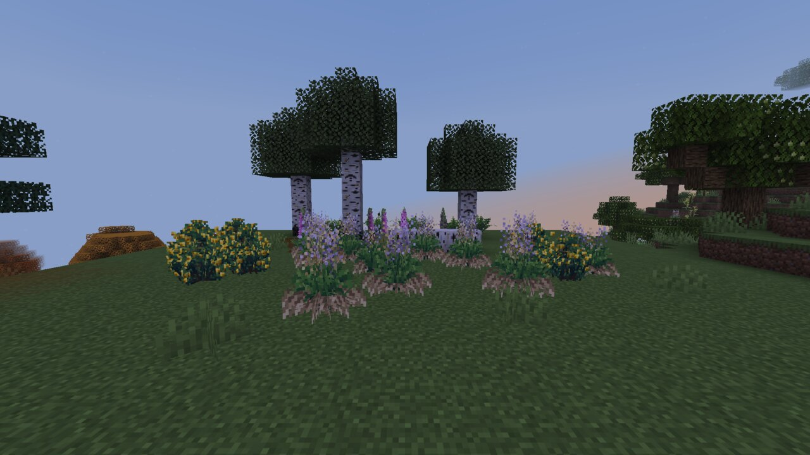

Moor and woodland plants
Five wild plants of the open moor and the birch woods, drawn in far finer detail than the game's own grass and ferns: tussocks of hair-grass, male ferns, foxgloves, prickly gorse and the silver birch. You don't grow them: you find them, and take them home to plant.


Where they grow
| Plant | Where | What it's like |
|---|---|---|
| Tufted Hair-grass Tufted hair-grass | plains, meadows, swamps, taiga, windswept hills, snowy plains | A dense tussock of hair-fine blades in a skirt of pale dead straw, under a haze of silvery-purple and gold flower heads. Shears or Silk Touch to take it. |
| Male Fern Male fern | forests, birch and dark forests, taiga, windswept forests | A shuttlecock of arching fronds with fiddleheads unfurling from the middle and last year's brown fronds at its foot. Shears or Silk Touch to take it. |
| Foxglove Foxglove | forests, birch woods, flower forests, dark forests, meadows | Two blocks tall: a rosette of soft grey-green leaves and a one-sided spire of pink bells, spotted inside. Bone meal makes another. Crafts into 2 magenta dye. |
| Gorse Gorse | windswept hills, stony shores, plains, meadows | A spiny dark bush blazing with yellow pea flowers. Pushing through it is slow, and it pricks. Foxes, rabbits and bees slip through unharmed. Crafts into yellow dye. |
| Silver Birch Log Silver birch | birch forests (and now and then an ordinary forest) | A tall, slender tree, papery white bark with black dashes and peeling curls, on a black, cracked old foot. Its logs make birch planks and burn like birch. |
Close up






Using them
- Planting: all four plants go on grass or dirt. They don't spread; plant them where you want them.
- Gorse as a hedge: you and most animals are slowed and scratched pushing through it (foxes, rabbits and bees slip through), so it makes a cheap, prickly hedge round a field.
- Dye: a foxglove makes 2 magenta dye; a gorse bush makes 1 yellow.
- Silver birch logs count as birch logs: they make birch planks, and burn as fuel. The black old foot is one block at the base of each tree.
- Compost: all four plants go in the composter.